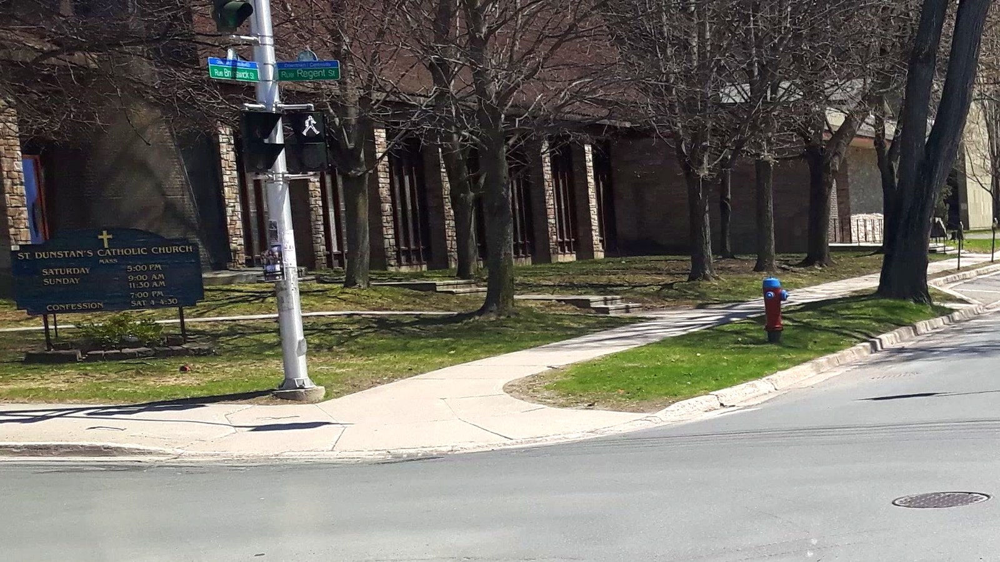

Bienvenue
Bienvenue sur le site internet de la paroisse.
St. Dunstan's Church, fondée en 1827, est située à Fredericton, New Brunswick. Ce site est un miroir non officiel préparé sous la doctrine EVE Glyph Design, avec le même soin éditorial que le site officiel de la paroisse. La source officielle demeure stmarymagdaleneparish.ca.
Une paroisse, un peuple
La foi vécue localement, avec une communauté qui prie, célèbre et prend soin des autres.
Horaire des messes
| Jour | Heure |
|---|---|
| Messe anticipée, samedi | 4:00 PM |
| Dimanche | 9:00 AM & 11:30 AM |
| Premier samedi du mois | 9:00 AM |
| Jeudi | 12:05 PM |
| Mercredi — Bénédiction, puis messe | 6:00 PM · 6:30 PM |
| Vendredi — Chapelet à saint Joseph, puis messe | 6:00 PM · 6:30 PM |
| Confessions — samedi | from 2:30 PM |
| Adoration — jeudi | 1:00 – 5:00 PM |
Les heures dominicales — samedi 16 h, dimanche 9 h et 11 h 30 — concordent entre le moteur de recherche paroissial du diocèse, le site propre de la paroisse et les annuaires tiers. Les heures de semaine ne concordent pas : le diocèse, le site paroissial et les agrégateurs publient chacun un ordre différent. Les heures de semaine ci-dessus suivent le site propre de la paroisse, la source la plus proche de première main, mais téléphonez au bureau au (506) 444-6001 avant tout déplacement en semaine.